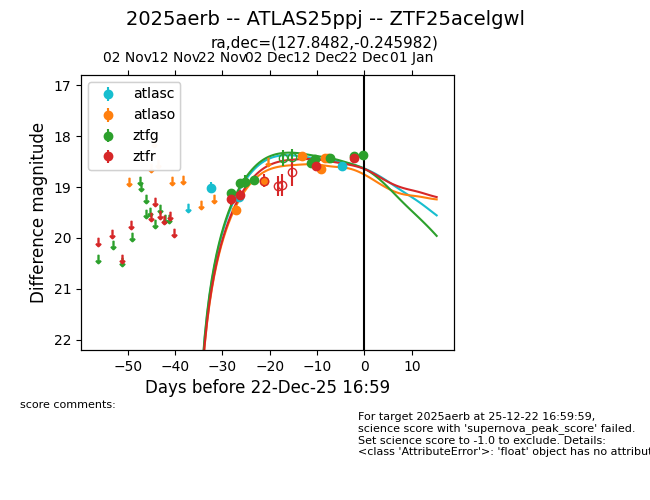
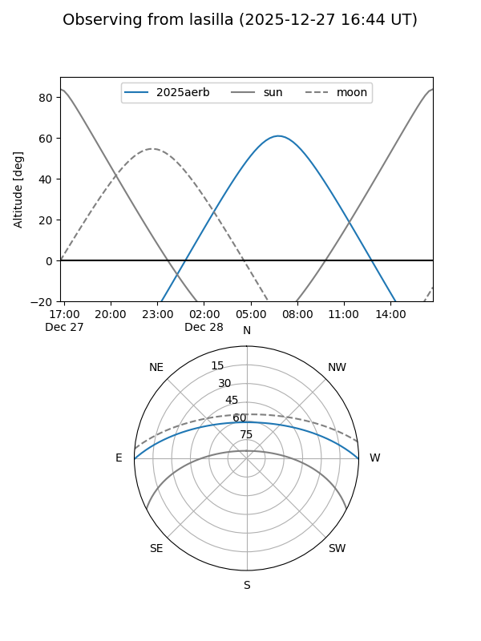
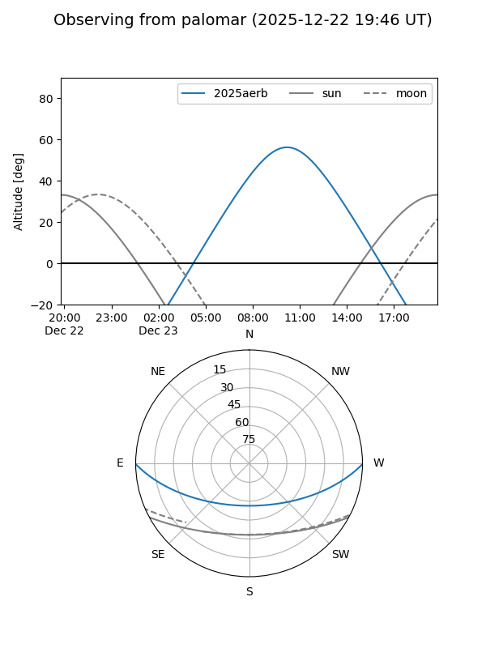
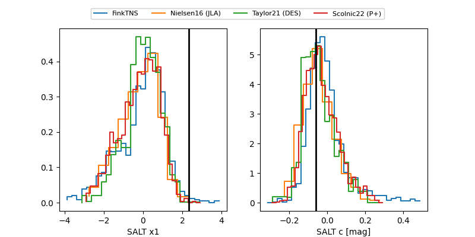

2025aerb
Target 2025aerb at 2025-12-31 17:59
Aliases and brokers:
FINK: link
Lasair: link
ALeRCE: link
TNS: link
YSE: link
alt names
ZTF25acelgwl (ztf,fink_ztf)
2025aerb (tns,yse)
ATLAS25ppj (atlas)
Coordinates:
equatorial (ra, dec) = 127.8482,-0.24598
equatorial (HMS+DMS) = 08:31:23.57,-00:14:45.53
galactic (l, b) = (225.1608,+21.96285)
Flags:
Photometry:
last atlasc=18.59, atlaso=18.43, ztfg=18.34, ztfr=18.38
3 atlasc, 6 atlaso, 10 ztfg, 6 ztfr detections
Lightcurve

Visibility


Additional plots
